最終ボス「dis-human」
最終ボスにふさわしく、気合い要素を押し付けてきます。ある程度は脅威を減らせますが、やはり覚える・慣れるのは避けられないでしょう。
耐久力(単位：レーザー本数)
- 本体：150
- パーツ
- ハッチ：17
- レーザーバラまきアーム：80
- ブラックホールアーム：5
- 破裂弾：1.5
基本的なこと
実はこのボス、以下のどちらかを満たせば撃破できます。
- 本体の耐久力(レーザー150本分)を削りきる
- レーザーバラまきアーム(レーザー80本分)を両方破壊する
一見すると後者を選ぶメリットは無さそうですが、破壊したアームからはレーザーが出なくなります。どのみち2回はレーザーバラまきに付き合わされるため、この点が大きく効いてきます。
第1形態
形態移行まで無敵なため、攻撃を避けつつラウンドディバイダーのリチャージを狙っていきます。
ブロック弾はdis-humanのサンダーレーザーに当たると、分裂弾に変化します。あらかじめショットで破壊しておくか、スクロールアウトで画面外へ押しやりましょう。時計回りなので、3時か9時の方角で迎撃するのがベターです。
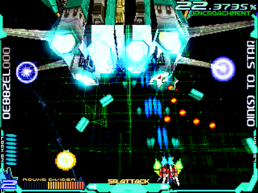ブロック弾はその後も残るため、引き続きショットで破壊します。同時にdis-humanへレーザーを連射して、ゲージを満タンにしましょう。極太レーザーと分裂弾が襲ってきたら、ラウンドディバイダーで安全に対処します。ただし、WR-02Rは使わないで下さい。次のポイントまでにリチャージが間に合わないので。
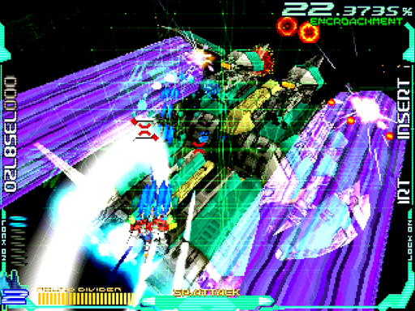攻撃をやり過ごしたら、何はなくともレーザーを連射してゲージを稼ぎます。ブラックホール弾が展開されたら、まず10時の方角あたりへ陣取りましょう。
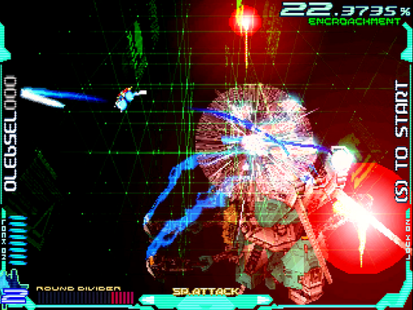すると、ホーミングレーザーともども自機の方へ飛んできますので、ブラックホール弾を回り込むようにしながら手前へ戻り、画面外へ押しやります。この間もレーザーは連射して、ブラックホール弾の動きを遅くし続けて下さい。
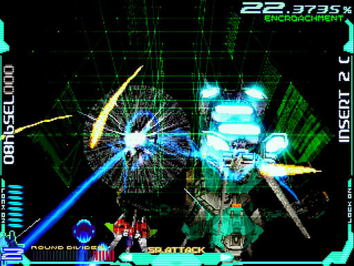ホーミングレーザーが全弾画面外へ行ったら、ブラックホール弾を沿うように回り込み、また10時の方角へ戻ります。上手く行けばこの辺りで、ダメでももう1回繰り返せば、ブラックホール弾が壊れて形態移行します。
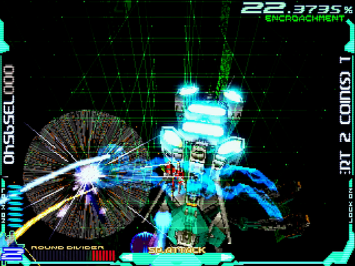
第2形態
通常パターン
とにかく最速でアームを破壊します。後述の理由で、まず向かって左のアームへハイパーレーザー。形態移行時の動きは固定なので、覚えて回転中からフルロックを狙います。ロックオンサイトを引いたり戻したりして、的確にロックしましょう。
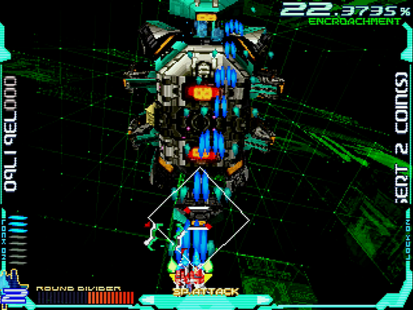そして、問題のレーザーバラまき。以前は「確実な対策が無い」と言われていた攻撃ですが、R-GRAY1氏がパターンを発見されました。dis-humanが腕を振り上げる直前のスコアにより、以下のように分岐します1。
- 百の位が奇数：左→右→左
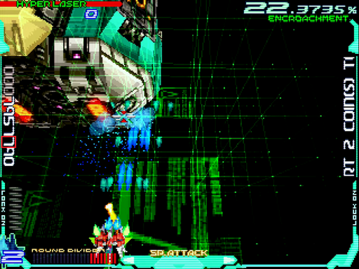 - 百の位が偶数：右→左→右
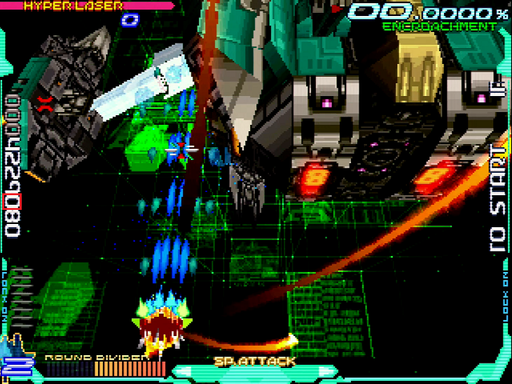
- 百の位が奇数：左→右→左
dis-humanが同じ高度に来た辺りでスコアを見れば、攻撃が絞れます。いったん手を止めて、数値を変えないようにすると良いでしょう。
もちろん避ける必要はありますが、方向が分かるだけでもだいぶラクです。以下の条件で、安全地帯も存在します。ただし条件があるため、完全に頼り切るのはオススメしません。第3波が完全に撃たれ切った事を確認してから、動くようにしましょう。
- 右→左→右のパターン
- 第3波が撃たれ切った後
- 画面右下端でレバー入れっぱなし
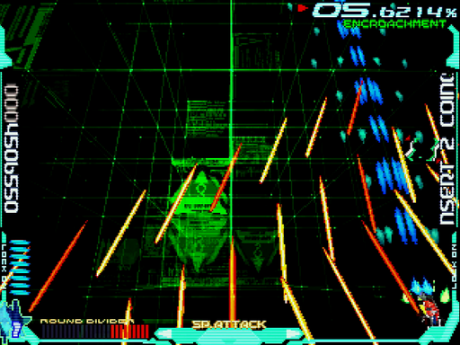
dis-humanが画面に戻ってきたら、向かって左のアームをハイパーレーザーし続けます。極太レーザー・分裂弾・ブロック弾が飛んできたら、すかさずラウンドディバイダー。これで、左のアーム(とハッチ)が壊せるはずです。右のアームに攻撃目標を移しつつ、分裂弾を避けましょう。
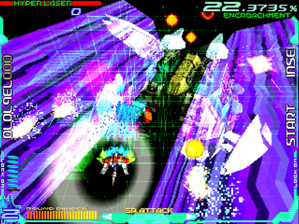2セット目はdis-humanが回転するため、同じく左へ攻撃します。3セット目に入る辺りで、残るアームも壊して撃破できるでしょう。
ただし、ここからアームを壊した点が効いてきます。以下、スライドする方向別に説明します。
第1波が左へスライド
この場合、第1波は画像の通り全く撃ってきません。アタリです。
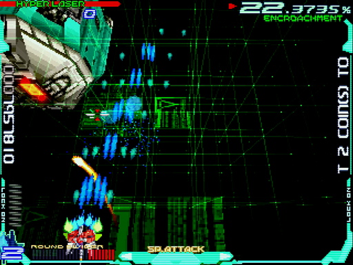第2波は普通に撃ってきますが、第3波は自機狙いのみに減っています。これなら、引き付けてちょこちょこ避けていくだけです。ただし、左端のロックオンゲージにレーザーが潜んでいる事があるため、あまり行き過ぎないようにして下さい。
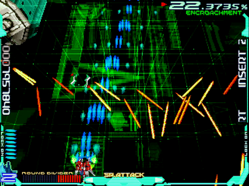
第1波が右へスライド
この場合、第1波は普通に避けます。
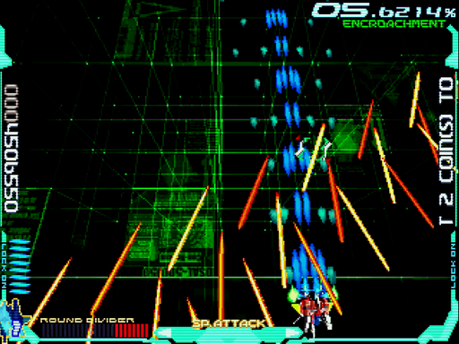第2波は自機狙いのみなので、少しラクになります。画面下に張り付くより、少し前に出て寝かせた形に弾を撃たせたいところ。避け終わったら、画面右寄りに陣取りましょう。
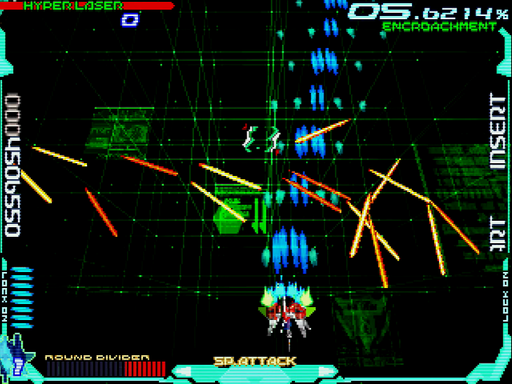すると、第3波は安全地帯が使えるため、避けずに済ませる事ができます。撃たれ切ったのを確認してから、ゆっくり右下端へ動けば良い訳です。
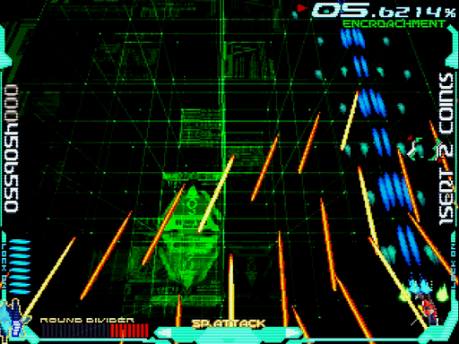
ランク調整パターン
通常パターンとやる事は変わりませんが、このパターンの利点を改めて強調します。レーザーバラまき(1セット目/第1波)の画像を載せるので、見比べてみて下さい。圧迫感がまるで違いませんか?
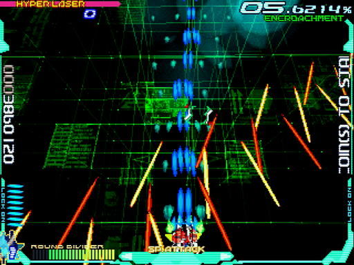
ぶっちゃけて言えばランク調整パターン自体、この攻撃に頭を悩ませ、何とかして脅威を減らそうと作ったものでした。それぐらい、この攻撃はおっかないのです。
1. 2人プレイの場合は、プレイデータの持ち主側のスコアで判定されます ↩